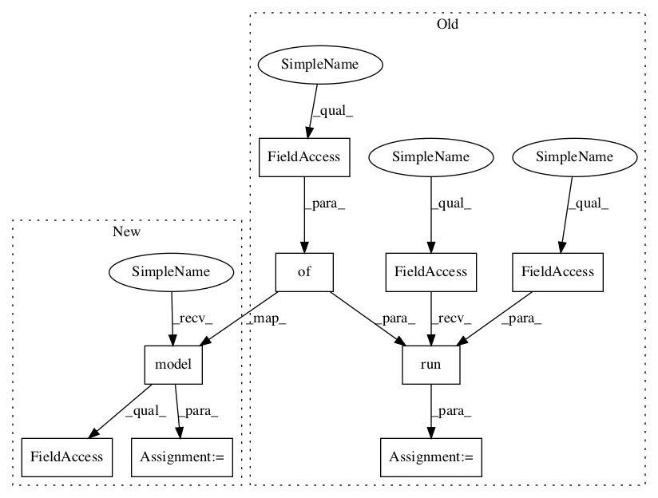

641a28fbf0daff0ad1ad0f43d2c4b545cb6f9656,examples/reinforcement_learning/tutorial_cartpole_ac.py,Actor,choose_action_greedy,#Actor#Any#,114

Before Change
return tl.rein.choice_action_by_probs(probs.ravel())
def choose_action_greedy(self, s):
probs = self.sess.run(self.acts_prob, {self.s: [s]}) // get probabilities of all actions
return np.argmax(probs.ravel())
After Change
def choose_action_greedy(self, s):
// probs = self.sess.run(self.acts_prob, {self.s: [s]}) // get probabilities of all actions
_logits = self.model([s]).outputs
_probs = tf.nn.softmax(_logits).numpy()
return np.argmax(_probs.ravel())
class Critic(object):
In pattern: SUPERPATTERN
Frequency: 3
Non-data size: 9
Instances
Project Name: tensorlayer/tensorlayer
Commit Name: 641a28fbf0daff0ad1ad0f43d2c4b545cb6f9656
Time:
Author: null
File Name: examples/reinforcement_learning/tutorial_cartpole_ac.py
Class Name: Actor
Method Name: choose_action_greedy
Project Name: tensorlayer/tensorlayer
Commit Name: 641a28fbf0daff0ad1ad0f43d2c4b545cb6f9656
Time:
Author: null
File Name: examples/reinforcement_learning/tutorial_cartpole_ac.py
Class Name: Actor
Method Name: choose_action
Project Name: tensorlayer/tensorlayer
Commit Name: 641a28fbf0daff0ad1ad0f43d2c4b545cb6f9656
Time:
Author: null
File Name: examples/reinforcement_learning/tutorial_cartpole_ac.py
Class Name: Critic
Method Name: learn